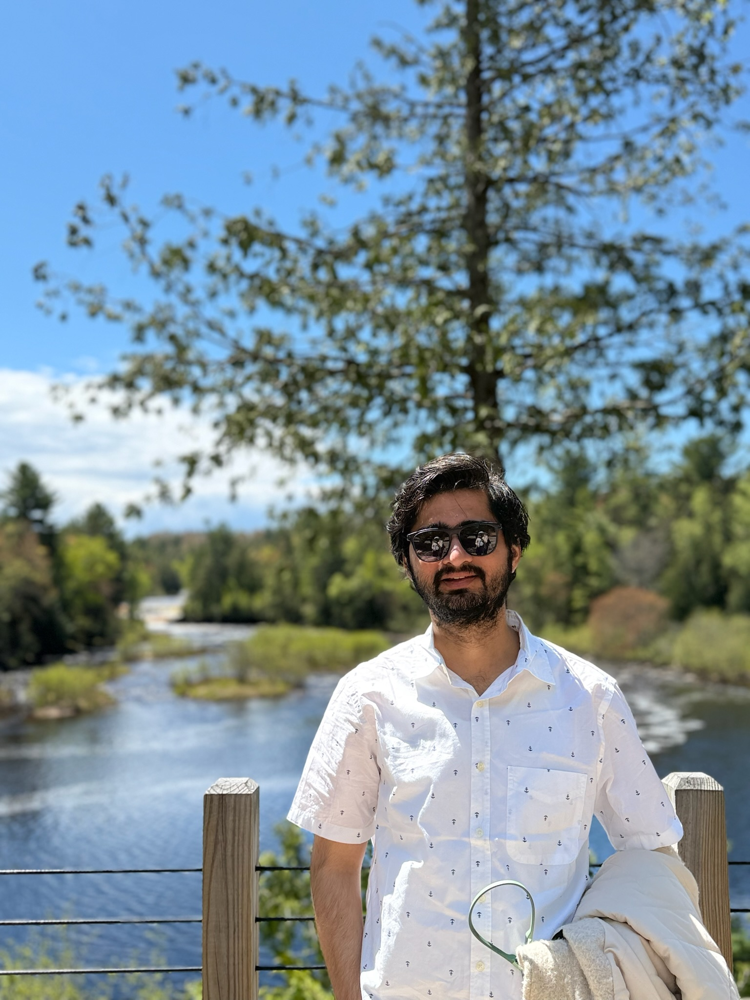

Modeling the path
from rain to river.

I am a PhD candidate in Civil & Environmental Engineering at the University of Wisconsin–Madison, where I study stormwater infrastructure reliability, extreme precipitation, and machine-learning-augmented hydrologic simulation.
My work combines physically based hydrologic models (SWMM, HEC-RAS) with radar-based stochastic storm transposition and machine learning to assess how urban stormwater networks hold up under extreme rainfall — including ML surrogate models that cut computational cost by 95% for large-scale reliability analysis, in place of traditional Monte Carlo simulation.
Before my PhD, I earned my M.Tech in Civil Engineering from the Indian Institute of Science (IISc), Bengaluru, and my B.Tech in Civil Engineering from Jamia Millia Islamia, New Delhi. In between, I worked as a Research Assistant at IIT Delhi, estimating river discharge from satellite imagery (NASA SWOT, Landsat, Sentinel) in data-scarce basins. When I'm not modeling watersheds, you'll find me near one.
I'm a Graduate Research Assistant at UW–Madison, advised by Daniel B. Wright in the Hydroclimate Extremes Research Group.